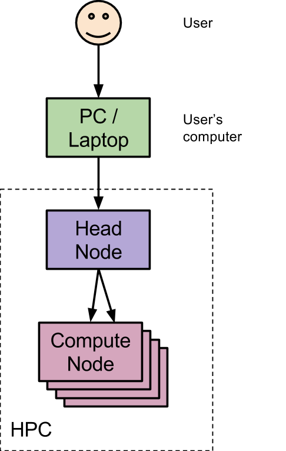

class: center, middle, title .header[ .header-left[<img height="70px" style="padding-right: 30px; margin-top: -30px;" src="../../img/melbioinf_logo.png"/>] ] # Introduction to HPC ## Hands-on workshop ??? **p**: toggles **presenter** mode **c**: creates a **clone** for dual screen LETS Get excited about High Performance Computing It's a lot to learn but not that difficult; just quite different to what you might be used to. --- # Melbourne # Bioinformatics .header[ .header-right[<img height="70px" style="padding-right: 30px; margin-top: -30px;" src="../../img/melbioinf_logo.png"/>] ] * High-end Computing * Life Science Computing Expertise <u>melbournebioinformatics.org.au</u> ??? --- # Objectives .header[ .header-right[<img height="70px" style="padding-right: 30px; margin-top: -30px;" src="../../img/melbioinf_logo.png"/>] ] 1. What is an HPC 2. Loading Software 3. Submitting a job 4. Monitoring jobs 5. Putting it all together ??? * Slides for Introduction * Then self-paced hands-on workshop --- # What is an HPC? .header[ .header-right[<img height="70px" style="padding-right: 30px; margin-top: -30px;" src="../../img/melbioinf_logo.png"/>] ]  * Big * Shared * Coordinated * Compute Collection ??? * Lots of CPU/Mem * Many users * Job Queues/Fair use * Multiple Computers (Called NODES) * Describe Figure * User TOUCHES pc * pc SSHs headnode * headnode ALLOCATES JOBS to compute nodes --- # Why use HPCs? .header[ .header-right[<img height="70px" style="padding-right: 30px; margin-top: -30px;" src="../../img/melbioinf_logo.png"/>] ] * Many *CPU*s * Large *Memory* * *Efficient* use ??? * Lots and Faster * 10x + a desktop * Pooled resources: "When A not use B can" --- # Software Modules .header[ .header-right[<img height="70px" style="padding-right: 30px; margin-top: -30px;" src="../../img/melbioinf_logo.png"/>] ] * Packaged * Loadable * Versions ??? * **Boxed** to avoid **conflicts** * Must **load** (**blank** to start) * Multiple versions then available --- # Job Submission .header[ .header-right[<img height="70px" style="padding-right: 30px; margin-top: -30px;" src="../../img/melbioinf_logo.png"/>] ] * SLURM * Queues (Partition) * Batch ??? * SLURM: Simple Linux Utility for Resource Management * Placed in Queue till resources available * Aka Partition * Batch: * Not interactive (keyboard,display) * May not start immediately * Script --- # Resources .header[ .header-right[<img height="70px" style="padding-right: 30px; margin-top: -30px;" src="../../img/melbioinf_logo.png"/>] ] * CPUs * Memory * Nodes * Time ??? --- # Job Type .header[ .header-right[<img height="70px" style="padding-right: 30px; margin-top: -30px;" src="../../img/melbioinf_logo.png"/>] ] * Exclusive * Shared ??? * Exclusive = X node(s) * Shared = X cpu(s) * Today use SHARED only --- # Before we start .header[ .header-right[<img height="70px" style="padding-right: 30px; margin-top: -30px;" src="../../img/melbioinf_logo.png"/>] ] * Q/A style * Incremental Hints * Think > Hint > Answer .spacer[] #### What is the Answer to Life? <div class="md-typeset"> <details> <summary>Hint</summary> What is the answer to everything? <br/> As featured in <em>The Hitchhiker's Guide to the Galaxy</em> </details> <details> <summary>Answer</summary> <strong>Answer</strong>: 42 <br/> Ref: <a href="http://en.wikipedia.org/wiki/42_%28number%29">Number 42 (Wikipedia)</a> </details> </div> ??? --- # Ready, Set, Go .header[ .header-right[<img height="70px" style="padding-right: 30px; margin-top: -30px;" src="../../img/melbioinf_logo.png"/>] ] * Pairs? .giant-url2[bit.ly/2J5Lo0N] ??? * Pairs: * Recommend, * Alternate *driving* responsibilities * Make sure both understand what is happening